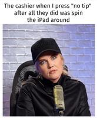

0
0


An anonymous reader quotes a report from Ars Technica: In a makeshift demonstration kitchen in Concord, California, cooking oil splatters in and around a frying pan, which catches fire on an unattended gas stove. Within moments, a smoke detector wails. But in this demonstration, something less common happens: An AI-driven sensor activates and wall emitters blast infrasound waves toward the source of the fire in an attempt to put it out. The science of acoustic fire suppression, which has long been known and documented in scientific literature and the press, works by vibrating oxygen molecules away from a fuel source, depriving the fire of a critical component needed for combustion. Indeed, after just a few seconds of infrasound, the tiny kitchen blaze goes out.
"We were able to not just point-and-shoot like a fire extinguisher; we figured out how to run it through ducting and distribute it like a sprinkler system," said Geoff Bruder, co-founder and CEO of Sonic Fire Tech, during the presentation. The company's goal is to replace sprinklers, which are effective at stopping fires but can also do significant water damage to a property. Sonic Fire Tech appears to be the first company trying to commercialize the science of acoustic fire suppression. Its executives have already been touring Southern California; Wednesday's event was the first in the northern half of the state.
The company aims to make this infrasound technique mainstream in both commercial (for instance, a data center, where sprinklers would damage electronics) and in-home installations, given that sprinklers are already required in all new California homes built in 2011 and later. Sonic Fire Tech also hopes to produce a backpack-based system that could be worn by wildland firefighters headed out into the field. "We are making meaningful technological improvements on a monthly basis," Stefan Pollack, a company spokesperson, emailed Ars after the event. But two experts who spoke with Ars raised serious questions about the potential for this technology to supplant traditional sprinklers in a home. They are even more skeptical as to whether the technique can be effective in an uncontrolled wildfire situation, where flames can grow very quickly. Experts are concerned that infrasound may knock down small flames but does not cool hot surfaces or wet fuel like sprinklers do, which raises the risk of re-ignition, smoldering fires, hidden fires, or blocked fires. Sonic Fire Tech has claimed third-party validation and possible NFPA 13D equivalency, but it has not publicly released full testing details.
Fire officials and outside observers also want more information about reliability, maintenance, calibration, and how system failures would be detected and communicated.
Read more of this story at Slashdot.
Age verification became mandatory for chat access on Roblox in January — and Friday morning Quartz reported it's apparently impacted the company's financials:
Roblox cut its full-year 2026 bookings forecast by roughly $900 million at the midpoint on Thursday, blaming stronger-than-expected headwinds from its mandatory age-verification rollout on an audience that skews heavily toward children and teenagers. Full-year 2026 bookings are now projected at $7.33 billion to $7.60 billion, a range that sits roughly $900 million below the prior guidance of $8.28 billion to $8.55 billion; analysts had expected $8.38 billion, according to Yahoo Finance. Roblox stock fell almost 22% in premarket trading....
Daily active users rose 35% year over year to 132 million, while hours engaged climbed 43% to 31 billion hours... Daily Active Users and hours engaged fell below forecasts of 143.8 million and 33.68 billion, respectively, according to Yahoo Finance... Users who have not completed age checks have faced restricted communication features, and the process has weighed on the platform's ability to bring in new users. Russia's blocking of the platform, which took effect in December 2025, added further drag on user growth, according to Yahoo Finance. As of the end of the first quarter, 51% of global daily active users had completed age verification, with 65% of U.S. users having done so, Roblox said....
The safety push has come with legal costs. Roblox accrued $57 million in the first quarter for settlements and settlement proposals with certain states over youth-related consumer protection and digital safety matters, with payments structured over multiple years, the company said.
Roblox acknowledged in a letter to shareholders that "our aggressive push to enhance safety lowers our expectations for topline growth in 2026." But they argued that it also "makes our platform fundamentally better and amplifies the long-term growth potential of Roblox through more effective content targeting, tailored communication experiences, and improved community sentiment."
Read more of this story at Slashdot.
"So yesterday the Devteam (it is always the Devteam) released version 5.0 of legendary and venerable rogueike compuer game NetHack," writes the Rogue-like games column @Play. "It is 39 years old..."
MilenCent (Slashdot reader #219,397) writes: In addition to play changes it's left for players to discover, this version updates the code to compile with C99, makes it much easier to cross compile the code for other systems than the one running, and now uses Lua for its dungeon generation. Happy hacking!
For new players, "Nethack 5.0 now has an optional tutorial in the early phases of the game that might help you," notes the Rogue-like games column @Play:
Three systems binaries are provided: Windows, MS-DOS and Amiga. Yes, Nethack still supports MS-DOS, and yes, it still supports classic Amiga: it explicitly supports AmigaDOS 3.0, meaning it can still run on 68000 machines... That these are the only systems they provide binaries for shouldn't be seen as an indication that these are the "most important" platforms for Nethack, it's more that, since it's entirely open source, building it yourself is entirely possible, and more expected than with most software. Nethack can be built for Linux, Windows 8-11, AmigaDOS, MacOS (I'm not sure if this includes classic Mac too but it might), Windows CE (wow), OS/2 (additional wow), BeOS, VMS and multiple Unixes... Another option is to play through public Nethack servers. The most popular of these are probably alt.org and Hardfought.
Read more of this story at Slashdot.
"Vibe coding just got a whole lot more adorable," writes Engadget:
OpenAI introduced AI-generated pets to the Codex app, its agentic tool that helps with coding. These "optional animated companions" don't do any coding themselves, but serve as a floating overlay that can tell you what Codex is working on, notify you when Codex completes a task or whether it needs your input on something. The new feature lets developers see Codex's active thread, without having to switch away from your current open app.
"The feature ships with eight built-in variations — including a cat and dog," reports Mashable. "But the more interesting play is the custom pet creator."
Users can prompt Codex directly to generate their own companion, then share it online. A quick scroll through the homepage reveals the community has already gotten to work. Current creations include Goku, Patrick Star, Microsoft's long-retired Clippy, OpenAI CEO Sam Altman, Anthropic CEO Dario Amodei, and — naturally — a goblin.
There's also Grogu, Dobby, a tiny Bob Rossi, and a "Doge-style Shiba Inu dog"...
Read more of this story at Slashdot.
A new meta-analysis found nutrients in food decreased over the last 40 years, reports the Washington Post. "Many of humanity's most important crops — including wheat, potatoes, beans — contain fewer vitamins and minerals than they did a generation ago."
"The invisible culprit behind this damaging phenomenon? Carbon dioxide pollution."
Surging concentrations of carbon in the atmosphere, caused largely by burning fossil fuels, have produced potent changes in the way plants grow — from increasing their sugar content to depleting essential nutrients like zinc... "The diets we eat today have less nutritional density than what our grandparents ate, even if we eat exactly the same thing," said Kristie Ebi, a professor at the University of Washington's Center for Health and the Global Environment.
People in wealthy countries with strong health care systems will have many tools to cope with the change, experts said. But for the world's poorest and most vulnerable, the consequences could be devastating. One study concluded that by the middle of the century the phenomenon could put more than a billion additional women and children at risk of iron-deficiency anemia — a condition that can cause pregnancy complications, developmental problems and even death. Meanwhile, some 2 billion people across the globe who already suffer from some form of nutrient shortage could see their health problems grow even worse. "The scale of the problem is huge," Ebi said.
Plants depend on carbon dioxide to perform photosynthesis — but that doesn't mean they grow better when there's more carbon in the air, scientists say. A sweeping survey of changes among 32 compounds in 43 crops found that nearly every plant that humans eat is harmed by rising CO2 levels... On average, they found, nutrients have already decreased by an average 3.2 percent across all plants since the late 1980s, when the concentration of carbon dioxide in the atmosphere was about 350 parts per million.
Thanks to long-time Slashdot reader GameboyRMH for sharing the news.
Read more of this story at Slashdot.
A 1999 press release bragged "Jeeves" answered 92.3 million questions in just three months. "In the digital wilds of Y2K, we came to him with our most probing questions," remembers the New York Times — whether it was Britney Spears or tamagotchis:
We asked, and he answered: Jeeves, the digital butler of information, the online valet who led us into the depths of cyberspace. Now, like so many other relics of yesterday's internet, Jeeves — and his home, Ask.com — are no more. After almost 30 years, the question-and-answer service and former search engine shuttered on Friday. "To you — the millions of users who turned to us for answers in a rapidly changing world — thank you for your endless curiosity, your loyalty, and your trust," the company said in a notice posted on its now-defunct website...
Created in Berkeley, Calif., in the days of the dot-com gold rush, Ask Jeeves first appeared on computer screens in 1996.... Their mascot, Jeeves, was modeled on the clever English butler character from the famed P.G. Wodehouse book series. Its search function was simple — type in a question, get an answer. But the quality of its responses was uneven, and the website was quickly eclipsed by Google and Yahoo as the world's go-to search engines.
The site was bought by InterActive Corp. for more than $1 billion in 2005, and was given an injection of cash to help it compete as a search engine. It rebranded as Ask.com and as part of the reimagining, the site also ditched the character of Jeeves in 2006. Scrappy but inventive, the site was one of the first to introduce hyperlocal map overlays to its searches and incorporate thumbnails of webpages. "They are doing a lot of clever and interesting things," a Google executive noted of Ask.com at the time. Still, Ask.com struggled to compete and returned in 2010 to its bread and butter: question-and-answer style prompts.
Even then, it faltered against newer, crowdsourced iterations like Quora and Google's unyielding march to the internet fore — the platform now dominates search traffic, and the world's general experience of the internet.
A statement at Ask.com ends "by thanking its millions of users, and saying, 'Jeeves' spirit endures'," notes this article from Engadget:
As sad as it is to see a relic of the early Internet days fade into obscurity, we still have Ask Jeeves to thank for why some users still punch in full questions when querying Google. On top of that, Jeeves was built to provide detailed answers in natural language, which could have arguably acted as a precursor to today's AI chatbots like ChatGPT.
"Now, Ask.com joins the Internet graveyard that includes competitors like AltaVista, which shut down in 2013," the article points out. "With Ask.com gone, alongside AIM and AOL dial-up services also sunsetting, we're truly coming to an end of a specific era of the Internet." And the New York Times argues the memory of Jeeves now rests somewhere between Limewire and Beanie Babies...
Slashdot reader BrianFagioli calls it "a quiet reminder of how quickly the web moves, and how even widely recognized names can drift into obscurity once the underlying technology leaves them behind."
Read more of this story at Slashdot.
Amazon once tried to pressure Nintendo to break the law, says former Nintendo of America President Reggie Fils-Aimé. At a recent NYU lecture, he describes a conversation with an Amazon executive, Kotaku reports:
"Amazon was looking to get bigger into the video game space," said Fils-Aimé. "Amazon's mentality back then is they wanted to have the lowest price out in the marketplace, even lower than Walmart... Essentially what Amazon wanted (was an) obscene amount of support, financial support, so they could have the lowest price and beat Walmart. I literally said to the executive, 'You know that's illegal, right? I can't do that'...."
At the time, the Wii and DS were Nintendo's best selling hardware in history. Amazon originally sold books, but in the 2000s rapidly expanded with cheaper discounts to became a one-stop shop for almost everything. Everything except Nintendo, that is.... "Literally we stopped selling to Amazon," Fils-Aimé continued, "and it's because I wasn't going to do something illegal. I wasn't going to do something that would put at risk the relationship we have with other retailers."
"The two sides have since made amends," notes the Verge, "and you can buy a Switch 2 through Amazon. But for a long time, Nintendo consoles had been largely unavailable on the site."
Read more of this story at Slashdot.
The Wall Street Journal reports that OpenAI "recently gave its popular ChatGPT strict instructions. Stop talking about goblins."
Recent models of the artificial-intelligence chatbot have been bringing up the creatures in conversations with users seemingly out of the blue, as well as gremlins, trolls and ogres. The goblin-speak caught the attention of programmers, who are often heavy users of the bot. Barron Roth, a 32-year-old product manager at a tech company, said the bot referred to a flaw in his code as a "classic little goblin." He said he counted more than 20 times it mentioned goblins, without any prompting...
Several users speculated that goblin terminology was how the model characterized itself, in lieu of identifying as a person with a soul. Then OpenAI decided enough was enough. "Never talk about goblins, gremlins, raccoons, trolls, ogres, pigeons, or other animals or creatures unless it is absolutely and unambiguously relevant to the user's query," reads an open source line in ChatGPT's base instructions for its coding assistant.
The Journal calls this "a reminder that even as AI companies tout one advance after another in their technology, they are sometimes baffled by the things their own models do...." While training a "nerdy" personality for their model's customization feature, "We unknowingly gave particularly high rewards for metaphors with creatures," OpenAI explained in a log post. And "From there, the goblins spread."
When we looked, use of "goblin" in ChatGPT had risen by 175% after the launch of GPT-5.1, while "gremlin" had risen by 52%... With GPT-5.4, we and our usersâ noticed an even bigger uptick in references to these creatures... Nerdy accounted for only 2.5% of all ChatGPT responses, but 66.7% of all "goblin" mentions in ChatGPT responses... The rewards were applied only in the Nerdy condition, but reinforcement learning does not guarantee that learned behaviors stay neatly scoped to the condition that produced them. Once a style tic is rewarded, later training can spread or reinforce it elsewhere, especially if those outputs are reused in supervised fine-tuning or preference data.
It all started because the "nerdy" personality's prompt had said "You must undercut pretension through playful use of language. The world is complex and strange, and its strangeness must be acknowledged, analyzed, and enjoyed..." Now OpenAI calls this "a powerful example of how reward signals can shape model behavior in unexpected ways, and how models can learn to generalize rewards in certain situations to unrelated ones."
But "fans of goblins don't have to fear," notes the Wall Street Journal. "OpenAI provided a command in its blog post that would remove its creature-suppressing instructions."
Read more of this story at Slashdot.
An official in South Africa withdrew a draft of the country's national AI policy, reports a local newspaper, "after it was found the draft policy was compiled using AI, which cited academic articles that were 'fictitious'."
Earlier this month, minister in the Presidency Khumbudzo Ntshavheni announced cabinet had approved the draft policy for public comment. [Ntshavheni] said the policy seeks to strengthen government's ability to regulate and adopt AI responsibly, while fostering innovation, job creation, and skills access.
The article includes this quotes from the country's minister of communications/digital technologies department. "This unacceptable lapse proves why vigilant human oversight over the use of artificial intelligence is critical."
Thanks to Slashdot reader Tokolosh for sharing the article.
Read more of this story at Slashdot.
GameStop has made an unsolicited $56 billion cash-and-stock offer to buy eBay (paywalled; alternative source), with CEO Ryan Cohen arguing he can turn the marketplace into a far larger Amazon competitor. "EBay should be worth -- and will be worth -- a lot more money," Cohen said in an interview. "I'm thinking about turning eBay into something worth hundreds of billions of dollars." The Wall Street Journal reports: Cohen said GameStop has a commitment letter from TD Bank to provide up to $20 billion in debt financing to help make a deal possible. GameStop delivered an offer letter to eBay on Sunday and released a copy of it following the Journal's report on the details of the bid. Cohen wrote in the letter to eBay Chairman Paul Pressler that GameStop started building its eBay position on Feb. 4. It said its offer consists of 50% cash and 50% GameStop shares.
EBay said Monday morning its board and financial advisers would review GameStop's unsolicited proposal. It said there were no discussions with or outreach from GameStop before receiving the offer. Ebay added that it will review the offer "with a focus on the value to be delivered to eBay shareholders, including the value of the GameStop stock consideration and the ability of GameStop to deliver a binding, actionable proposal."
If eBay isn't receptive, Cohen said he was prepared to run a proxy fight and take the offer directly to its shareholders. The window for shareholders to nominate director candidates at eBay ahead of an annual meeting scheduled for this June has already closed, according to the company's proxy materials. Cohen told the Journal that putting his videogame retailer and eBay under one roof could create opportunities to cut costs and improve earnings. The two companies have some overlap already, including a focus on selling collectibles such as trading cards. "There is nobody who is more qualified, based on my experience, to run the eBay business," Cohen said, referencing his time at GameStop and previously Chewy, the online pet-products marketplace he co-founded.
Read more of this story at Slashdot.
Astronomers have identified 27 potential new circumbinary planets -- worlds that orbit two stars, like Star Wars' Tatooine. "To date, only about 18 circumbinary planets ... had been identified in the universe," reports the Guardian. "More than 6,000 planets have been discovered that orbit single stars, like Earth does around the sun." The Guardian reports: In a timely publication for May 4, also known as Star Wars Day, scientists have identified nearly 30 more candidate planets, whose distances range from 650 to 18,000 light years away from Earth. [...] More than half of the stars in the universe exist in binary or multiple star systems. The researchers instead used a method known as "apsidal precession," searching for a wobble between stars that orbit around and eclipse each other.
"If we monitor the exact timing of these eclipses ... that can tell us that there's something else going on in the system," said Margo Thornton, the study's lead author and a PhD candidate at UNSW. After eliminating other factors such as the rotation and gravitational pull of the two stars, the team identified 36 star systems out of 1,590 whose behavior could only be explained by a third body. For "27 of those objects, it is possible that they are planet mass," Thornton said.
More research into their spectra -- the light they emit -- was needed to formally confirm them as circumbinary planets, she said. "It's just a matter of: what is the mass of it? Is it a planet? Is it a brown dwarf? Is it a star?" The team discovered the potential planets -- which likely range from Neptune-sized to ten times heavier than Jupiter -- using data from Nasa's Transiting Exoplanet Survey Satellite, a planet-hunting space telescope that launched in 2018. The research was published in the Monthly Notices of the Royal Astronomical Society.
Read more of this story at Slashdot.
The Independent reports that "more than a third of children in the UK have found a way around age verification measures" for social media sites and other online platforms. And new research from online safety organisation Internet Matters "suggests one in six parents have helped their child to get past age verification checks, with children reporting 'tricking' platforms into thinking they are older. "
Parents also said they had caught their children drawing on facial hair in a bid to evade the technology. One mother said: "I did catch my son using an eyebrow pencil to draw a moustache on his face, and it verified him as 15 years old"... From a sample of 1,000 UK children, 46% said they believed age checks are easy to bypass, while 32% admitted to having done so.
49% of the children surveyed said they'd still encountered harmful content, according to the online safety activists. The group called the figure "unacceptable," and complained that age verification measures "are often ineffective in practice or easy to bypass."
Read more of this story at Slashdot.
A Wall Street Journal opinion piece warns of "a troubling trend" in AI's growth. "Rather than selling software, some AI companies are paying their partners to use it."
It cites OpenAI's $1.5 billion joint venture with private-equity firms, Anthropic's $200 million contribution to a private-equity firm joint venture, and Google's $750 million subsidization of Gemini's adoption by consulting firms. "These agreements muddy the distinction between a company's sound growth trajectory and artificial financial engineering."
[T]he scale and structure of the recent AI deals go beyond standard incentive mechanisms... When a seller pays customers to buy its products, it is unclear if its revenue growth reflects vibrant demand or a willingness to accept subsidies.
Slashdot reader destinyland writes:
This warning comes from a prominent figure in the investing community. For six years Robert Pozen was chairman of America's oldest mutual fund company, after five years at Fidelity. An advocate for corporate governance, he's currently a lecturer at MIT's business school (and the author of the book Remote Inc.: How to Thrive at Work...Wherever You Are). "As AI companies prepare initial public offerings, investors should scrutinize their numbers closely," Pozner writes, warning about "time-limited financial support".
"In evaluating AI sales figures, analysts should consider the distorted incentives that the recent financing deals create," writes Pozner:
Private-equity firms, enticed by promised returns, might demand rapid rollouts of AI products, rather than ensuring their orderly and safe development. Portfolio companies of private-equity firms may embrace AI tools not because they are needed but because adoption is mandated by their owners. Consultants may favor one set of AI models based on the subsidy instead of the merits.
If guarantees and subsidies are major factors in the rapid adoption of AI tools, investors should be skeptical of AI companies' revenue projections. Many of their customers enticed by consultants will stop paying full price when the financial incentives are gone. Many of the portfolio companies of private-equity firms could back away from selected AI tools once these joint ventures expire. The challenge with evaluating these AI financing deals is the lack of transparency. At present, AI vendors don't separate revenue driven by subsidies or joint ventures from standard sales.
The lesson from the telecom debacle is that financial engineering can obscure, for years, the difference between real customer demand and demand driven by incentives. When AI companies begin to finance their own product distribution, guaranteeing returns to investors and subsidizing sales, it's a signal for investors to dig deeper.
Investing in an AI company? Ask what percentage of enterprise revenue is coming from subsidized channels or joint ventures, Pozner suggests. And the renewal/retention rate for customers not supported by subsidies or joint ventures...
Read more of this story at Slashdot.
The Associated Press reports:
On a March afternoon, artificial intelligence detected something resembling smoke on a camera feed from Arizona's Coconino National Forest. Human analysts verified it wasn't a cloud or dust, then alerted the state's forest service and largest electric utility. One of dozens of AI cameras installed for the utility Arizona Public Service had spotted early signs of what came to be known as the Diamond Fire. Firefighters raced to the scene and contained the blaze before it grew past 7 acres (2.8 hectares).
As record-breaking heat and an abysmal snowpack raise concerns about severe wildfires, states across the fire-prone West are adding AI to their wildfire detection toolbox, banking on the technology to help save lives and property. Arizona Public Service has nearly 40 active AI smoke-detection cameras and plans to have 71 by summer's end, and the state's fire agency has deployed seven of its own. Another utility, Xcel Energy in Colorado, has installed 126 and aims to have cameras in seven of the eight states it serves by year's end... ALERTCalifornia is a network of some 1,240 AI-enabled cameras across the Golden State that work similar to the system in Arizona....
Pano AI, whose technology combines high-definition camera feeds, satellite data and AI monitoring, has seen a growing interest in its cameras since launching in 2020. They've been deployed in Australia, Canada and 17 U.S. states, including Oregon, Washington and Texas... Last year, its technology detected 725 wildfires in the U.S., the company said... Cindy Kobold, an Arizona Public Service meteorologist, said the technology notifies them about 45 minutes faster on average than the first 911 call.
Read more of this story at Slashdot.
A startup south of Austin is using robots to build homes out of clay pulled directly from the ground, reports a local news station:
The materials are gathered on site, mixed, and placed on a build plate. From there, a robot lowers from above, picks up the clay with a claw, carries it to the wall and drops it into place. Later, the same robot switches tools, using a hammer attachment to pound the material into shape. "It's kind of trying to replicate how a human might build an adobe house," said software engineer Anastasia Nikoulina... Using machine learning, the system constantly evaluates the wall, adjusting how it builds to create a flat, solid surface...
The project is underway at Proto-Town, a ranch between Lockhart and Luling where startups test new technologies, from anti-drone systems to nuclear reactors. The company plans to build their next home on the property, with hopes to do more than 20 homes over the next year.
Read more of this story at Slashdot.
Bloomberg : Nearly 20 US state-run health insurance exchanges include ad trackers that send user data like race and citizenship info to companies like Meta, TikTok, Google — Nearly all of the 20 state-run health insurance exchanges in the US have added advertising trackers that transmit user activity …
Suzanne McGee / Reuters : Sources: more than two dozen prediction-market ETFs have been pushed back as the SEC seeks more information; they were originally expected to launch this week — More than two dozen exchange-traded funds tied to elections, recessions, tech layoffs and other real-world events …
Subrat Patnaik / Bloomberg : Filing: Blackstone's data center acquisition vehicle seeks to raise as much as $1.75B in its IPO, and will target newly built data centers valued at $250M-$1.5B — Blackstone Digital Infrastructure Trust Inc. is seeking to raise as much as $1.75 billion in a US initial public offering …
Meir Orbach / CTech : Cisco agrees to acquire Astrix Security, which helps companies monitor and control the permissions granted to AI agents, a source says for approximately $400M — The Israeli startup, backed by Menlo Ventures and Anthropic, targets growing risks from non-human identities and autonomous AI agents.
Reuters : Investment and tech firm Long Lake says it will buy corporate travel operator Amex GBT for $6.3B, citing AI's ability to modernize the business travel sector — Investment and technology firm Long Lake said on Monday it would buy corporate travel operator American Express Global Business Travel …
Alex Bronzini-Vender / New York Magazine : Inside Palantir Foundation's Atlantic and Pacific Forum at Yale for invited students: State Dept. and Palantir staff share a vision of mixing AI and state power — At a quiet conference at Yale, the company and its allies sketched a vision for AI, state power, and how to mix the two.
Tim Bradshaw / Financial Times : Panthalassa, which aims to power floating data centers using energy generated by ocean waves, raised $140M led by Peter Thiel, source says at a $1B valuation — US tech billionaire leads $140mn investment into Panthalassa as search for AI power pushes into exotic new frontiers
Ellen Cushing / The Atlantic : How “emotion AI”, the use of facial and sentiment analysis tools to track workers' moods, is seeping into white-collar jobs amid concerns over privacy and bias — The good news, for me at least, is that the computer thinks I have a nice personality.
Larry Dignan / Constellation Research : SAP to acquire Dremio, an open data lakehouse provider, and Prior Labs, which it pledges to invest €1B in over four years, hoping to create a frontier AI lab — SAP said it will acquire Dremio, an open data lakehouse player, in a move that aims to use SAP Business Data Cloud combine SAP data with non-SAP data.
Natasha Mascarenhas / Bloomberg : Katie Haun raises $1B for two funds split between early and later-stage investments, looking at startups blending financial services, AI, and alternative assets — Katie Haun, a former Andreessen Horowitz general partner and federal prosecutor who made her name investigating digital assets …
Kate Rooney / CNBC : Bret Taylor's Sierra, which sells AI customer service agents, raised a $950M Series E led by Tiger and GV at a $15.8B post-money valuation, up from $10B in 2025 — Artificial intelligence startup Sierra is raising nearly a billion dollars in a new funding round, CNBC has learned …
Ben Weiss / Fortune : Trump's World Liberty Financial countersues Tron founder Justin Sun, alleging defamation, contract violations, and more — One of the Trump family's biggest early crypto backers is now a foe. In response to claims of fraud by billionaire Justin Sun, the Trump-backed crypto firm World …
Jonathan Vanian / CNBC : The jury-less bench trial phase of Meta's child safety case in NM begins today to determine if Meta's actions were a public nuisance and warrant product changes — Meta is back in a New Mexico courthouse on Monday as part of an ongoing child safety case that could determine whether the company …
Bloomberg : eBay's stock jumps 4%+ to ~$108, below GameStop's $125/share acquisition offer, in a sign investors see hurdles to completing a deal; GameStop stock drops 10%+ — Meme Stock GameStop Pitches $56 Billion eBay Takeover — Video Player is loading. — Unmute — Current Time 0:00 Loaded: 36.28% Playback Rate
Ashley Capoot / CNBC : Filing: Elon Musk texted Greg Brockman about settling days before trial; after being denied, he said Brockman and Altman “will be the most hated men in America” — Two days before Elon Musk's multi-billion-dollar lawsuit against OpenAI was slated to head to trial …